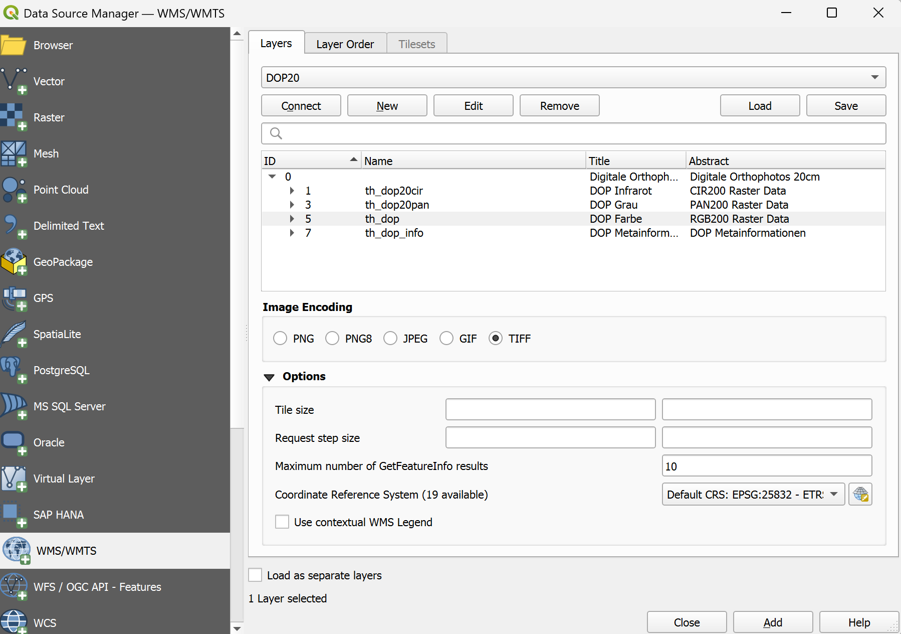
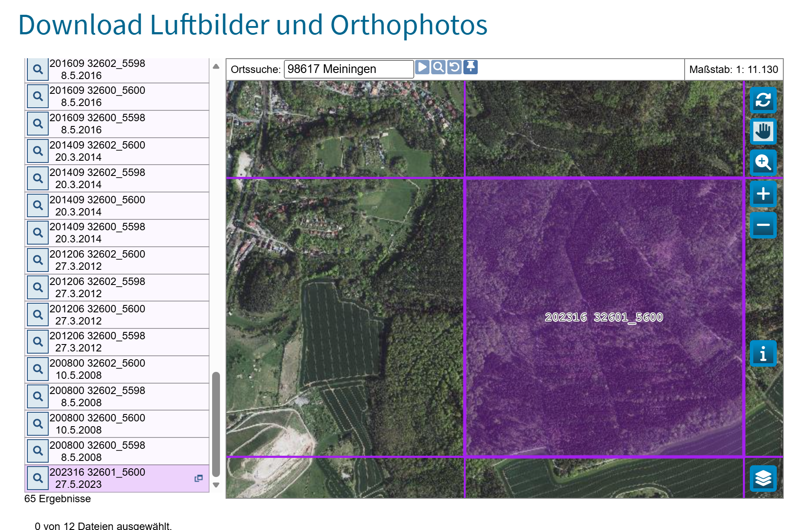
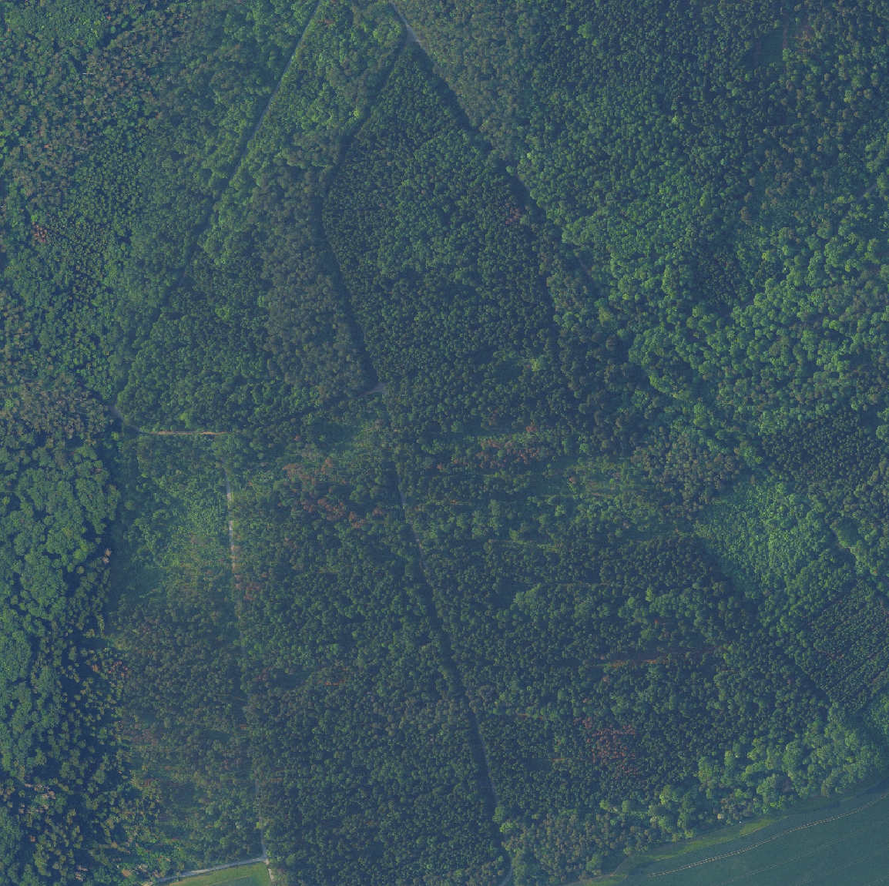
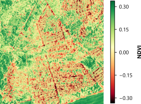

4 Vegetationsanalyse
Im Meininger Stadtwald gibt es vermehrt Hinweise auf abgestorbene Einzelbäume und Kalamitätsflächen. Für eine flächige Suche im Wald fehlt jedoch die Zeit. Suchen Sie bereits im Vorfeld jene Verdachtsflächen heraus, in denen geschädigte oder abgestorbene Baumkronen zu erwarten sind. Aufgrund der Größe des Untersuchungsraums entscheiden Sie sich zunächst für ein Digitales Orthophoto als Datengrundlage.
4.1 Untersuchungsraum
Für diese Übung wird der Normalized Difference Vegetation Index (NDVI) testweise in einem 1km² Ausschnitt angewendet. Geeignet sind Waldränder, Wege, Offenland und geschlossene Bestände, weil dort die Unterschiede im Indexbild gut sichtbar werden.
4.2 Digitale Orthophotos recherchieren
Öffnen Sie QGIS und speichern Sie das Projekt als einheit_4.qgz.
Digitale Orthophotos für Thüringen werden über das Geoportal Thüringen und das Thüringer Landesamt für Bodenmanagement und Geoinformation bereitgestellt.
Wichtige Links:
- Download Luftbilder und Orthophotos im Geoportal Thüringen
- Informationen zu DOP und DOP-WMS im Geoportal Thüringen
Für diese Übung sind vor allem DOP20 relevant. Es handelt sich dabei um ein Digitales Orthophoto mit 20 cm Bodenauflösung und im Idealfall mit NIR-Kanal. Diese werden jährlich landesweit für den Freistaat Thüringen erstellt. Nutzen Sie zunächst den WMS zur Orientierung und laden Sie für die Berechnung nur jene DOP-Kacheln herunter, die den gewählten Ausschnitt abdecken.
Ein Web Map Service (WMS) stellt georeferenzierte Kartenbilder über das Internet bereit, ohne dass die zugrunde liegenden Rasterdateien lokal gespeichert werden müssen.
4.3 Thüringer DOP20 nutzen
Beachten Sie die angezeigten Nutzungsbedingungen und verwenden Sie bei einer Veröffentlichung den Quellenvermerk © GDI-Th.
Schritt für Schritt in QGIS
Öffnen Sie QGIS und das Projekt
einheit_4.qgz.Öffnen Sie View > Panels > Browser, falls das Browser-Panel nicht sichtbar ist.
Klicken Sie mit der rechten Maustaste auf WMS/WMTS.
Wählen Sie New Connection….
Tragen Sie als Name
GDI-Th DOP20ein.Tragen Sie als URL ein:
https://www.geoproxy.geoportal-th.de/geoproxy/services/DOP20Klicken Sie auf OK.
Klicken Sie auf Connect.
Öffnen Sie die neue Connection
GDI-Th DOP20.Fügen Sie den Layer
th_dophinzu. Das ist das DOP20 in Farbe/RGB.Fügen Sie zusätzlich
th_dop20cirhinzu. Das ist das Color-Infrared-Orthophoto.

Fügen Sie aus dem WMS den Layer th_dop_info hinzu. Wählen Sie Attributes Toolbar > Identify Features und klicken Sie in eine beliebige Kachel. Wann fand die Befliegung statt?
Für die NDVI-Berechnung wird ein lokales DOP20 benötigt.
- Öffnen Sie den Downloadbereich für Luftbilder und Orthophotos.
- Wählen Sie den Dataset-Eintrag DOP20.
- Suchen Sie oben nach Meiningen.
- Filtern Sie nach Luftbildern bis zum Jahr 2024.
- Wählen Sie ein Gebiet im Stadtwald und laden Sie eine Kachel herunter. Achten Sie auf das rgbi-Kürzel, welches aussagt, dass es sich um ein multispektrales DOP mit RGB und NIR-Kanal handelt.
- Speichern Sie die Datei unter
01_rohdaten/DOP.

4.4 NDVI berechnen
- Ziehen Sie die gespeicherte GeoTIFF-Datei aus
01_rohdaten/DOPin QGIS in das Layers Panel. - Öffnen Sie Raster > Raster Calculator….
- Tragen Sie die NDVI-Formel mit den passenden Bandnummern ein. Die allgemeine Formel lautet:
NDVI = (NIR - Red) / (NIR + Red)- Speichern Sie die Ausgabe als
NDVI.tif. - Legen Sie die Datei im Ordner
03_ergebnisse/indizes/NDVIab. - Laden Sie
NDVI.tifin QGIS, falls es nicht automatisch erscheint.
4.5 Ergebnis darstellen
- Öffnen Sie mit Rechtsklick auf
NDVI.tifProperties > Symbology. - Wählen Sie Singleband pseudocolor.
- Nutzen Sie einen Grün-Rot-Farbverlauf von niedrigen zu hohen NDVI-Werten.
- Prüfen Sie typische Bereiche: geschlossener Wald, Waldrand, Wiese, Wege, Boden, Schatten.
- Vergleichen Sie den NDVI mit dem RGB-DOP.


Prüfen Sie mit Identify Features mehrere eindeutig beschattete Bereiche: Welche NDVI-Werte treten dort auf? Welche Werte finden Sie dazu im roten und nahinfraroten Wellenlängenbereich?
4.6 Zusatz: Moisture Index
Wiederholen Sie die Schritte für die NDVI-Erzeugung erneut für den Saalfelder Untersuchungsraum. Verwenden Sie die in Einheit 3 erzeugten, auf den Untersuchungsraum zugeschnittenen Sentinel-2-Bänder clip_RT_B08.tif und clip_RT_B11.tif.
Wenden Sie anschließend den Normalized Difference Moisture Index (NDMI) auf den Saalfelder Untersuchungsraum an. Der Index stellt Unterschiede im Feuchtegehalt der Vegetation heraus und kombiniert dafür das nahe Infrarot (NIR) mit dem kurzwelligen Infrarot (SWIR). Er dient u.a. als Frühwarnindex für Trockenstress und Dürre.
Die allgemeine Formel lautet:
NDMI = (NIR - SWIR) / (NIR + SWIR)Für Sentinel-2 wird der Index mit Band 8 und Band 11 berechnet:
NDMI = (B08 - B11) / (B08 + B11)Stellen Sie den NDMI als Singleband pseudocolor dar. Vergleichen Sie Waldflächen, Offenland, Siedlungen und Wasser. Welche räumlichen Unterschiede im Feuchtegehalt werden sichtbar, insbesondere in nahe Gössselsdorf?